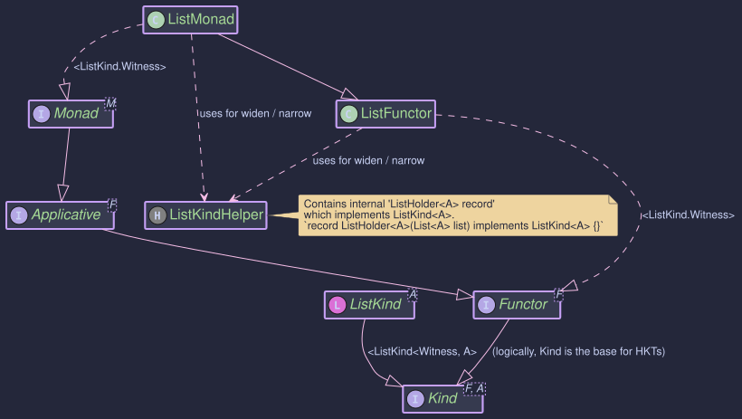

The ListMonad:
Non-Deterministic Computation with Java Lists
- How to model non-deterministic computations where each step produces multiple results
- Using
flatMapto explore all combinations andapto produce Cartesian products - Building search algorithms and combinatorial problems with monadic operations
- Generating and filtering results within the higher-kinded type system
The Problem: Non-Deterministic Computation
Some computations don't have a single answer — they have many. Consider finding all valid moves for a chess piece, all paths through a grid, or all ways to make change for a dollar. In each case, every intermediate step branches into multiple possibilities, and you need to explore all of them.
With plain Java, this means nested loops, manual concatenation, and tangled control flow:
// Find all paths of length 2 from a starting node
List<List<String>> paths = new ArrayList<>();
for (String first : neighbors(start)) {
for (String second : neighbors(first)) {
paths.add(List.of(start, first, second));
}
}
Each level of nesting adds another loop. If the number of steps is dynamic, you need recursion with manual list-building. The structure of the problem — "for each possibility, explore further" — is buried under bookkeeping.
The ListMonad captures this pattern directly. A List represents multiple possible values, flatMap explores all combinations by applying a function to each element and concatenating the results, and ap produces Cartesian products. The nested-loop problem above becomes:
ListMonad listMonad = ListMonad.INSTANCE;
Kind<ListKind.Witness, String> starts = listMonad.of(start);
Kind<ListKind.Witness, String> step1 = listMonad.flatMap(
node -> LIST.widen(neighbors(node)), starts);
Kind<ListKind.Witness, String> step2 = listMonad.flatMap(
node -> LIST.widen(neighbors(node)), step1);
// step2 contains every node reachable in exactly 2 hops
Each flatMap expands one level of the search tree. No nested loops, no manual concatenation — the monad handles it.
Core Components

| Component | Role |
|---|---|
List<A> | Standard Java list — the underlying data structure |
ListKind<A> / ListKindHelper | HKT bridge: widen() wraps a List into Kind, narrow() unwraps it back |
ListMonad | Monad<ListKind.Witness> — provides map, flatMap, of, and ap over lists |
The monad operations correspond to familiar list operations:
| Type Class Operation | What It Does |
|---|---|
listMonad.of(value) | Create a singleton list containing value (null produces an empty list) |
listMonad.map(f, fa) | Apply f to every element — same as stream().map(f).toList() |
listMonad.flatMap(f, fa) | Apply f to each element (where f returns a list), concatenate all results — same as stream().flatMap(...) |
listMonad.ap(ff, fa) | Apply every function in ff to every value in fa — Cartesian product |
The key insight: flatMap on lists is non-deterministic computation. Each element branches into zero or more results, and all branches are collected into a single list.
How ap Produces a Cartesian Product
The ap operation applies every function to every value, producing all combinations:
functions: [f1, f2] values: [a, b, c]
↓ ap ↓
results: [f1(a), f1(b), f1(c), f2(a), f2(b), f2(c)]
This is the applicative Cartesian product — if you have n functions and m values, ap produces n * m results.
Working with ListMonad
The following examples demonstrate creating list contexts, composing operations, and building combinatorial pipelines.
ListMonad listMonad = ListMonad.INSTANCE;
// --- Wrap a standard List into the Kind system ---
Kind<ListKind.Witness, Integer> numbers = LIST.widen(Arrays.asList(1, 2, 3, 4));
// --- Lift a single value into a singleton list ---
Kind<ListKind.Witness, String> single = listMonad.of("hello"); // ["hello"]
Kind<ListKind.Witness, Object> empty = listMonad.of(null); // []
// --- Unwrap back to a standard List ---
List<Integer> unwrapped = LIST.narrow(numbers); // [1, 2, 3, 4]
// --- map: transform every element ---
Kind<ListKind.Witness, String> decorated = listMonad.map(
n -> "*" + n + "*", numbers);
// LIST.narrow(decorated) => ["*1*", "*2*", "*3*", "*4*"]
flatMap is where the non-deterministic power lives. Each element branches into multiple results, and all branches are collected.
ListMonad listMonad = ListMonad.INSTANCE;
Kind<ListKind.Witness, Integer> values = LIST.widen(Arrays.asList(1, 2, 3));
// Each number branches into itself and itself + 10
Function<Integer, Kind<ListKind.Witness, Integer>> branch =
i -> LIST.widen(Arrays.asList(i, i + 10));
Kind<ListKind.Witness, Integer> expanded = listMonad.flatMap(branch, values);
// [1, 11, 2, 12, 3, 13]
// Filtering: return an empty list to eliminate a branch
Function<Integer, Kind<ListKind.Witness, String>> evenOnly =
i -> (i % 2 == 0)
? LIST.widen(Arrays.asList("even", String.valueOf(i)))
: LIST.widen(List.of()); // empty — odd numbers are dropped
Kind<ListKind.Witness, String> filtered = listMonad.flatMap(evenOnly, values);
// ["even", "2"]
ap applies a list of functions to a list of values, producing every combination.
ListMonad listMonad = ListMonad.INSTANCE;
Function<Integer, String> addPrefix = i -> "Val: " + i;
Function<Integer, String> multiplyString = i -> "Mul: " + (i * 2);
Kind<ListKind.Witness, Function<Integer, String>> functions =
LIST.widen(Arrays.asList(addPrefix, multiplyString));
Kind<ListKind.Witness, Integer> inputs = LIST.widen(Arrays.asList(10, 20));
Kind<ListKind.Witness, String> results = listMonad.ap(functions, inputs);
// ["Val: 10", "Val: 20", "Mul: 20", "Mul: 40"]
This is the same Cartesian product shown in the diagram above — 2 functions applied to 2 values yields 4 results.
When to Use ListMonad
| Scenario | Use |
|---|---|
| Non-deterministic computation — exploring all possibilities | ListMonad with flatMap to branch and collect |
| Generating combinations or Cartesian products | ListMonad with ap |
| Writing generic code that works across monads | ListMonad — your logic programs against Kind<F, A> |
| Filtering within a pipeline (guard-style) | Return empty lists from flatMap to prune branches |
| Single-value computation with optionality | Prefer Maybe instead |
ListMonadimplementsMonad<ListKind.Witness>, giving youmap,flatMap,of, andapover standard Java lists.flatMapis non-deterministic composition: each element can produce zero, one, or many results, and all results are concatenated.approduces the Cartesian product of a list of functions and a list of values — O(n*m) results.of(null)produces an empty list, not a singleton containingnull.- For the HKT bridge:
LIST.widen()wraps aListintoKind,LIST.narrow()unwraps it back. Both are low-cost cast operations.
List has dedicated JMH benchmarks measuring map, flatMap, and ap composition. Key expectations:
mapscales linearly with list sizeflatMapperformance depends on the output size of the mapping functionapproduces Cartesian products — O(n*m) where n = functions, m = values
./gradlew :hkj-benchmarks:jmh --includes=".*ListBenchmark.*"
See Benchmarks & Performance for full details.